In religions around the world, the soul is seen as something that survives death, living on in another dimension and under a different form. Some believe the idea has its roots in dreams, where we can still see people who are no longer among us, as if they were still somewhere close by.
The Soul’s Journey in Romanian Tradition
In Romanian tradition, the rituals that follow someone’s death are meant to help their soul find its way to Heaven.
Gifts “for the soul”
Food is passed over the head of the departed “for their soul”, so that their journey to the other world is eased.
Three days around the house
Romanians believe that after death the soul steals a little more time, lingering around the house and wandering once more through the places where it lived. For three days, the family can feel their loved one close by, putting off their leaving. This is one of the reasons why the dead are not buried straight away.
Bells for three days and nights
For three days and nights the bells are rung, in the hope that the departed will wake up and that the soul lingering around the house will return to its body one more time.
Forty days on Earth
It is also believed that the soul stays on Earth for forty days, passing through the moments of its life once more before it ascends to the sky.
Wings of the Soul
A bird or a butterfly
While it lingers around the house, the soul can appear as a bird or a butterfly. Many people say that after a loved one died, they were surprised by such a creature during the days of mourning, and this is how the belief has survived to this day.
Answering the call in a dream
Alongside this belief comes a warning: if you dream of the dead and answer when they call you, you will follow them into the world of the dead.
Still With Us
Whatever we choose to believe about the soul, it is comforting to think that our loved ones are still with us, even when we can no longer hold them in our arms: wandering around us for a while, then beating their wings up to the sky as butterflies.
Sources
- Revista de lingvistică și cultură românească: “Sufletul dă semne” (in Romanian)
- Kudika: “Legătura nevăzută dintre fluturi și sufletele celor dragi plecați” (in Romanian)